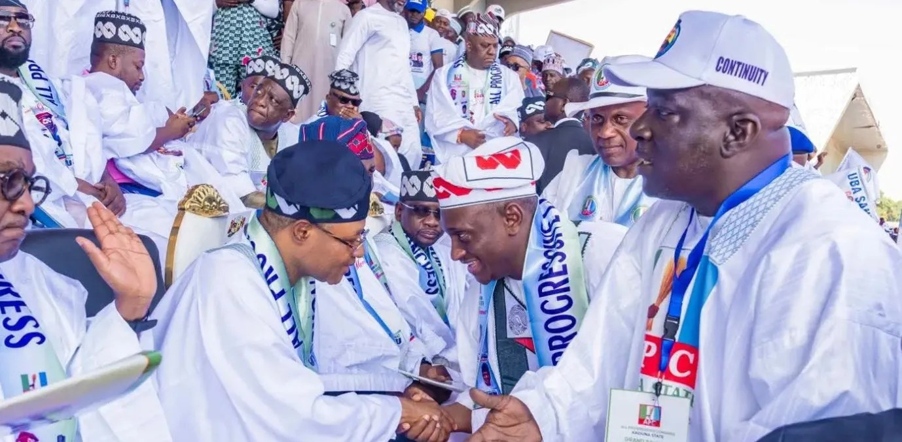

Zamfara govt inaugurates committee to review salary structure for tertiary institutions

Zamfara State has inaugurated a committee to examine the non-implementation of revised salary structures and other staff welfare concerns at state-owned tertiary institutions. Secretary to the State Government Abubakar Mohammad Nakwada, who chairs the committee, led its first meeting on Thursday in Gusau.
The committee will review relevant government circulars, assess the financial implications and funding needed to address outstanding issues, and consult stakeholders. The concerns include demands from the Forum of Zamfara State Tertiary Institutions and Zamfara State University relating to salaries, allowances and promotion benefits.
At the inauguration, Nakwada said the government wanted a comprehensive and sustainable resolution. He called for an objective review of the facts and figures, with recommendations that are fair, affordable and practical, while taking account of the state’s financial circumstances. He said the administration was committed to staff welfare, industrial harmony and improving tertiary education.
Nakwada cited the increase in the minimum wage from N7,000 to N70,000, the clearance of gratuity arrears and a new salary scale for healthcare workers as examples of the government’s worker-welfare measures. He appealed to staff and unions to be patient and give dialogue a chance, saying the committee would consider legitimate demands even if not all could be addressed at once. He also urged unions to avoid industrial action while the review is under way.
Committee members include the commissioners responsible for finance; education, science and technology; local government and chieftaincy affairs; and budget and planning. Other members represent the government’s economic and financial affairs office, the tertiary institutions’ forum, the Nigeria Labour Congress in Zamfara State and Zamfara State University. The permanent secretary of the education, science and technology ministry will serve as committee secretary.
Source: Premium Times